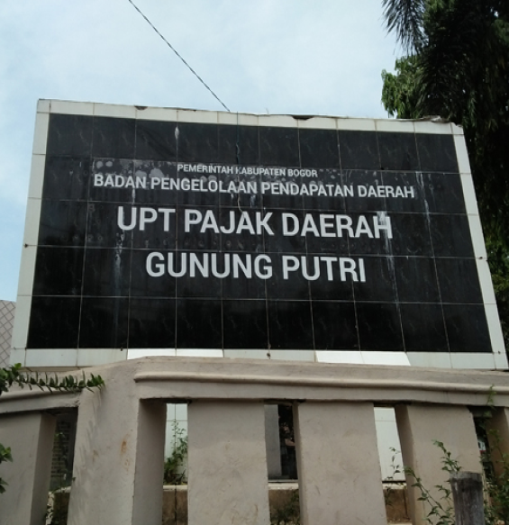
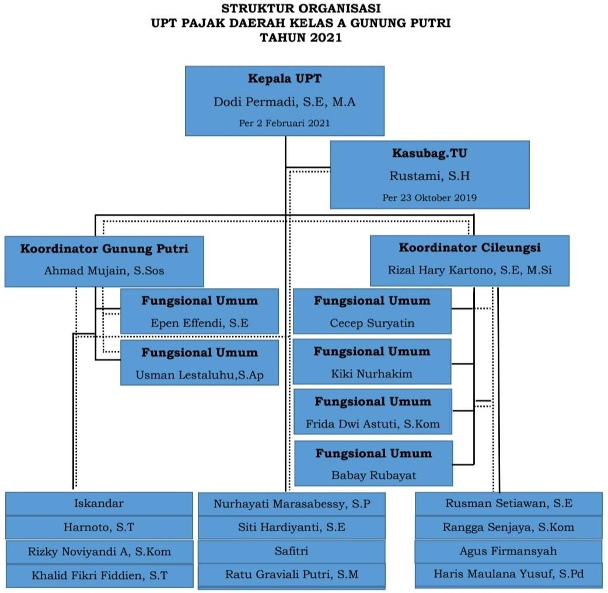
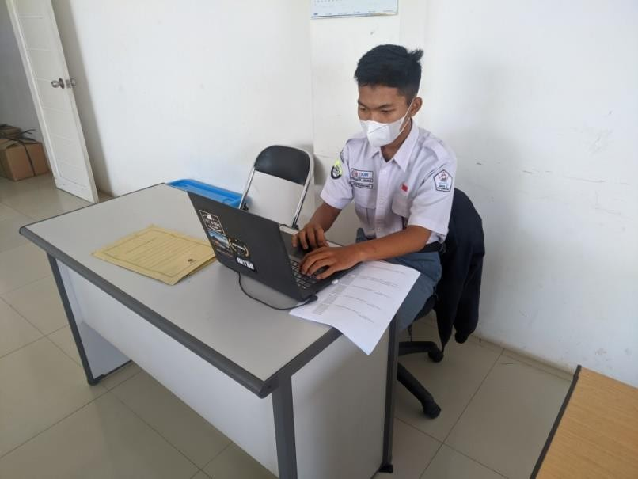
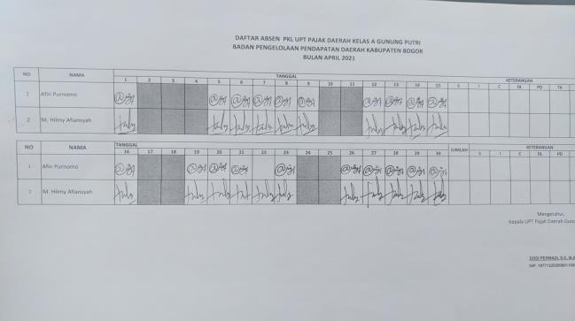
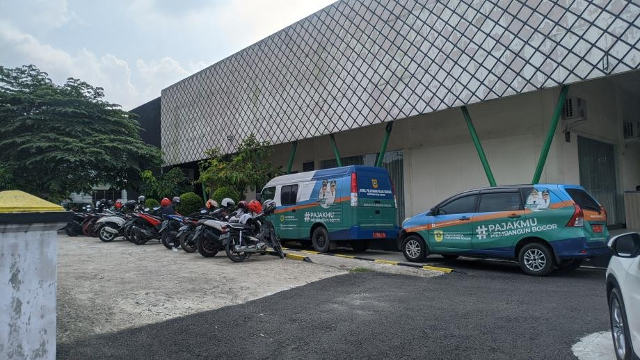
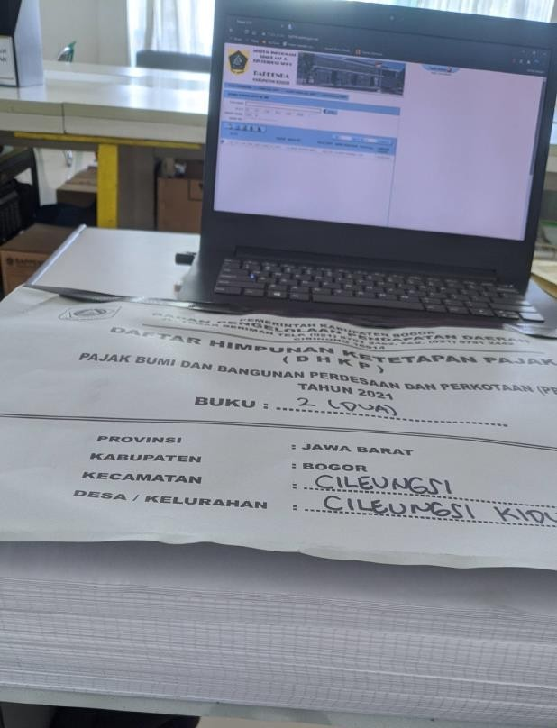
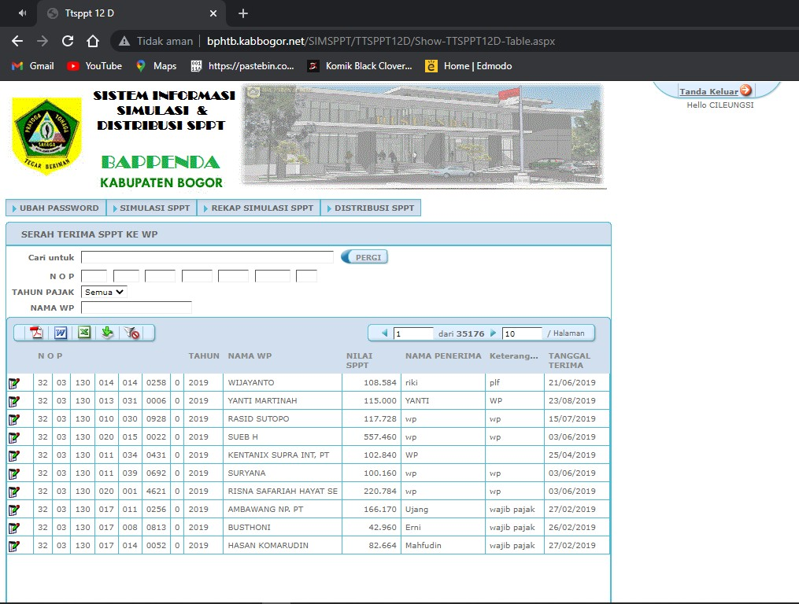
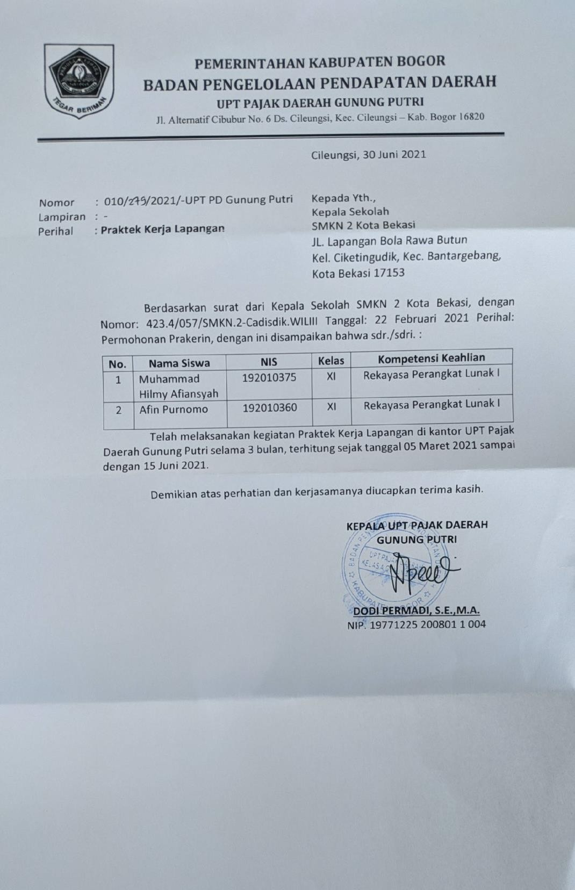

Profil Perusahaan
| Nama | : UPT Pajak Daerah Gunung Putri |
| Alamat | : Jl. Alternatif Cibubur No.6, Cileungsi, Kec. Cileungsi, Bogor, Jawa Barat 16820 |
| No. Telp | : 08118183286 |
| Bidang Usaha | : Perpajakan |
| Tahun Berdiri | : 2012 |
Visi Misi Perusahan
Visi
- Mewujudkan masyarakat Kota Bogor bersanitasi.
Misi
- Meningkatkan keterjangkauan masyarakat dalam akses sanitasi.
- Meningkatkan kualitas layanan sanitasi yang berkesinambungan dan berkelanjutan.
- Meningkatkan kualitas SDM
- Meningkatkan keterlibatan masyarakat, privat/swasta dan kerjasama antar pemerintah daerah, provinsi dan pusat dalam pembangunan sector sanitasi.

Uraian Pelaksanaan
Waktu Pelaksanaan
Pelaksanaan PRAKERIN dilakukan Selama 3 BulanProses Kerja
Kegiatan yang dilakukan diantaranya:Hambatan
Hambatan yang dialami selama pelaksanaan berupa Jaringan wifi errorSolusi Hambatan
Menyalakan hotspot pada handphoneGaleri

Pendokumentasian data distribusi

Absensi

Kantor Pajak UPT Gunung Putri

Proses Penginputan

Proses Penginputan via website pendistribusian SPPT

Surat Keterangan PRAKERIN
Biodata
| Nama | : Afin Purnomo |
| Kelas | : XI Rekayasa Perangkat Lunak 1 |
| Tempat, Tanggal Lahir | : Jakarta, 19 Maret 2004 |
| Tempat PRAKERIN | : UPT Pajak Daerah Gunung Putri |
| Divisi | : Informasi Teknologi (IT) |
| Mulai PRAKERIN | : 05 Maret 2021 |
| Selesai PRAKERIN | : 15 Juni 2021 |